Bloque 3. La formación de la Monarquía Hispánica y su expansión mundial (1474-1700)
1.1 Los Reyes Católicos, expansión y alianzas
Isabel de Castilla y Fernando de Aragón contrajeron matrimonio en 1469. Esta unión matrimonial, inicialmente, no supuso mayor impacto político, pero la llegada al trono castellano de Isabel en 1474 y la de Fernando a la corona de Aragón en 1479 sí permite hablar de unión dinástica entre las coronas de Castilla y Aragón. En 1479 nació una nueva entidad política: la Monarquía Hispánica[1].
Esta unión implicaba que ambas coronas compartieron una misma monarquía[2], pero cada territorio (Castilla, Aragón-Cataluña-Valencia) siguió rigiéndose bajo sus propias leyes. No se entendían como “reyes de España”, sino reyes de cada uno de sus territorios (con su propia moneda, leyes, instituciones, Cortes en cada reino, etc.).
El popular calificativo de “Reyes Católicos” fue asignado posteriormente, por una bula del papa Alejandro VI en 1496. Entonces, ya no quedaba ningún territorio de al-Ándalus (el reino nazarí de Granada cayó en 1492) y los últimos judíos sefardíes fueron expulsados en 1492. En este mismo año, el 12 de octubre, Colón llegó al nuevo continente: América[3]. 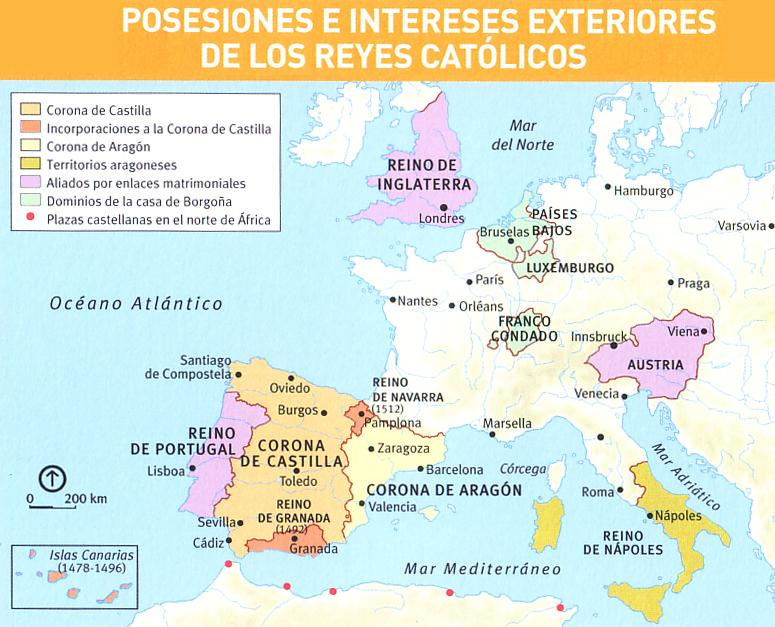
La guerra de Granada (1482-1492) avanzó mediante la conquista progresiva de plazas clave como Málaga (1487) o Baza y Almería (1489). Finalmente, tras las negociaciones dirigidas por Boabdil, se firmaron las Capitulaciones de Granada, haciendo efectiva su rendición el 2 de enero de 1492 e incorporando el último reducto andalusí a la Corona de Castilla.
En este contexto de expansión territorial, mientras la Corona de Aragón se proyectaba por el este, al Mediterráneo (Sicilia, Cerdeña, Nápoles y ducados griegos), Castilla dirigió su influencia hacia el Atlántico y el norte de África (conquista del archipiélago canario y plazas como Melilla). En esta época, donde ya se demostró que la Tierra era redonda[4], Cristóbal Colón propuso una ruta hacia el oeste para llegar a las Indias (Asia). Aprobada la expedición por los Reyes Católicos en las Capitulaciones de Santa Fe (1492), el viaje culminó inesperadamente con el contacto con un "Nuevo Mundo": América.
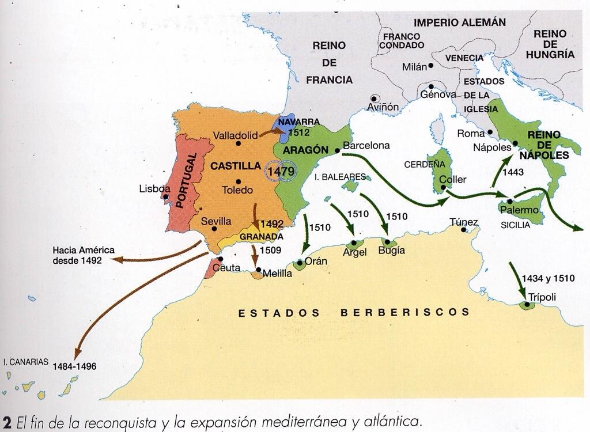
El último reino que quedaba en la península, sin contar Portugal, fue el reino de Navarra, que pasó a la Corona de Castilla con la condición de conservar su autonomía y privilegios (fueros). Toda estas ganancias territoriales de los Reyes Católicos (Mediterráneo, América, Navarra), no se quedaron ahí: crearon un complejo sistema de alianzas matrimoniales para casar a sus familiares e hijos con pretendientes al trono de importantes monarquías europeas (Estados alemanes, Inglaterra, Portugal, etc.)
En el ámbito religioso, los Reyes Católicos buscaron la unanimidad religiosa en sus reinos. Con este fin, instauraron el Tribunal de la Inquisición (1478) para perseguir a los falsos conversos del judaísmo (y, posteriormente, islam). Tras la toma de Granada y el decreto de expulsión de los judíos (1492), la presión sobre la población musulmana derivó en conversiones forzosas, especialmente en 1502, dando origen a los moriscos. La Inquisición actuó como un temido instrumento de control social y represión, mediante la confiscación de bienes, el encarcelamiento y la persecución de estas minorías religiosas.
1.2 La conquista y colonización de América
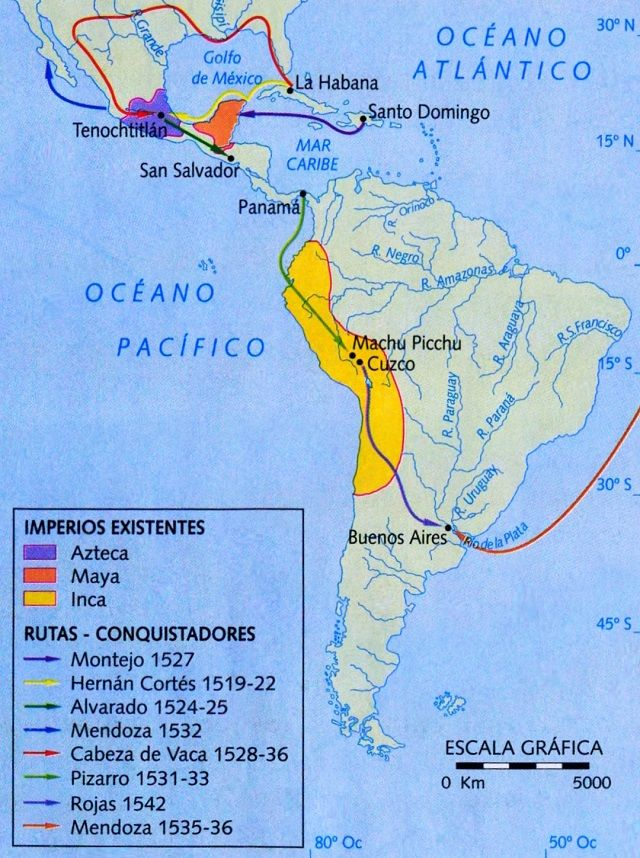
Ante la hegemonía aragonesa en el Mediterráneo, Castilla dirigió su proyección al Atlántico. Cristóbal Colón pactó con los Reyes Católicos las Capitulaciones de Santa Fe (1492) para buscar una ruta occidental hacia Asia y llegar a la India. Partiendo el 3 de agosto de 1492, desembarcó el 12 de octubre en la isla de Guanahaní (actual Bahamas) y exploró Cuba y La Española (actual Haití), denominando al territorio Las Indias al creer haber llegado al territorio asiático. Años más tarde, las expediciones de Américo Vespucio de 1499-1502 confirmaron que se trataba de un nuevo continente, siendo bautizado en 1507[5] como América (el Nuevo Mundo).
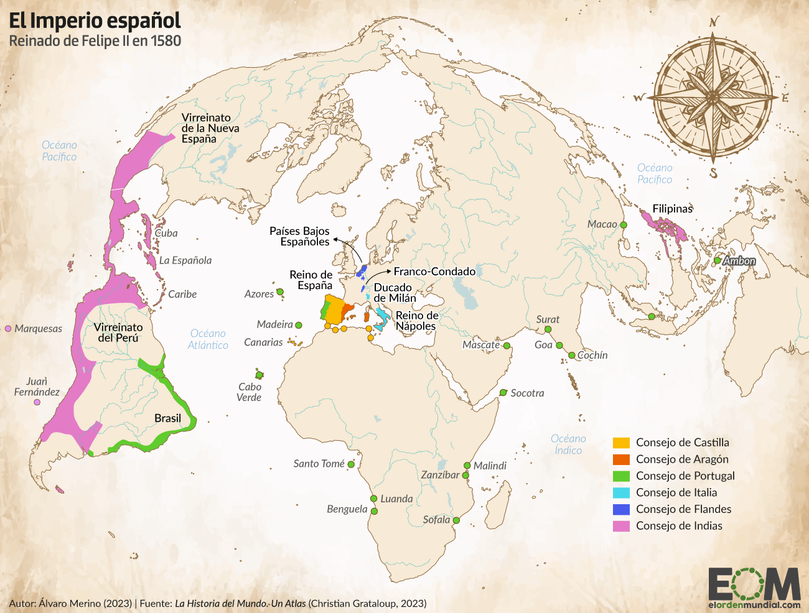
Dos años después de la llegada, en 1494, las dos grandes potencias colonizadoras del nuevo continente, la Monarquía Hispánica y Portugal (que también estaba expandiéndose hacia el Atlántico y compitiendo contra Castilla) llegaron a un acuerdo para repartirse el mundo: el Tratado de Tordesillas. Partiendo el globo por un meridiano, una parte sería para exploración portuguesa y la otra, para Castilla.
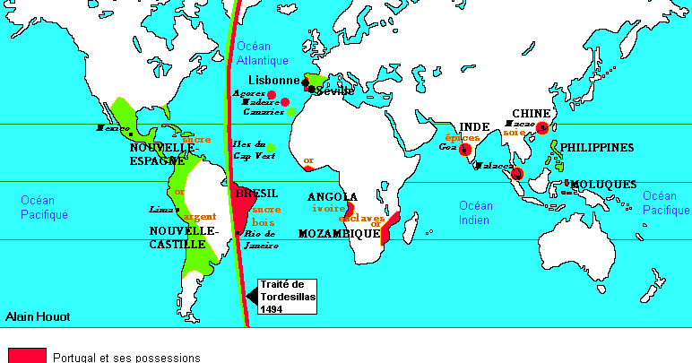
Hacia 1511, las principales islas antillanas (La Española, Cuba, Puerto Rico) ya habían sido sometidas por la Monarquía Hispánica. Para la gestión de estos territorios se adaptaron instituciones de tradición peninsular, articuladas mediante las capitulaciones de conquista y los repartimientos (inspiradas en los modelos de repoblación de la “Reconquista” ante al-Ándalus). La colonización combinó la sumisión de los pueblos autóctonos y el sistema de encomiendas[6] (sometimiento de los indígenas) con una justificación de misión evangelizadora (expandir el catolicismo), provocando además un severo colapso demográfico entre la población nativa (se estima entre 80 y 95 % de mortalidad en indígenas). A las causas de la caída poblacional, aunque mayormente fue por las epidemias de origen europeo que sus sistemas inmunitarios no podían soportar, se suman las malas condiciones en los trabajos forzados y las guerras de conquista.
- La colonización avanzó enormemente a partir de Carlos I, emperador del Sacro Imperio Romano Germánico y de la Monarquía Hispánica gracias a las alianzas matrimoniales establecidas por sus abuelos, los Reyes Católicos. En una primera fase destaca Hernán Cortés, conquistando el Imperio azteca (1519-1521), a lo que se suman las expediciones que darían por primera vez la vuelta al mundo. Iniciada por Magallanes y completada por Juan Sebastián Elcano (1519-1522) tras la muerte del primero, esta gesta permitió cartografiar los nuevos territorios explorados y supuso una explosión para disciplinas como la geografía. Políticamente, en esta etapa nace el primer virreinato (Virreinato de Nueva España).
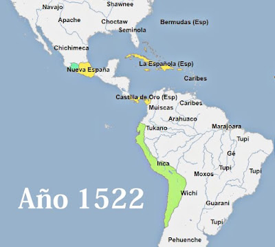
- En la segunda fase destacan Francisco Pizarro y Diego de Almagro, quienes lograron conquistar el Imperio inca (1531-1535). A esto se sumaron expediciones hacia el norte de América (río Misisipi), hacia el sur (Amazonas, cordillera andina) e, incluso, hacia el océano Pacífico e Índico (Filipinas, fundando Manila en 1571).
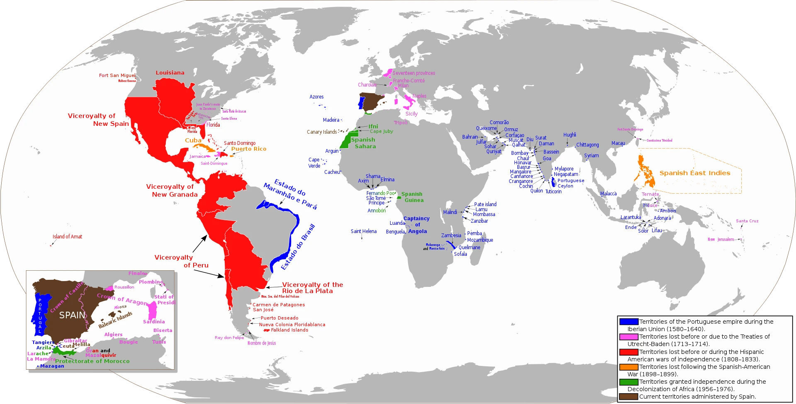
Todos los territorios americanos fueron integrándose en la Corona de Castilla y se crearon numerosas instituciones comerciales y aduaneras. En la península destacaron la Casa de Contratación de Sevilla (1503) —encargada de administrar a todos los viajeros y comerciantes hacia América— y el Consejo de Indias (1524). Este último era un órgano de gobierno basado en el sistema polisinodial (poli=muchos; sínodo=consejos), la forma de administración típica de la Monarquía Hispánica estructurada a través de múltiples consejos que asesoraban al rey.
Tanto el Virreinato de Nueva España (1535) como el nuevo Virreinato del Perú (1542) contaban con una administración local basada en cabildos[7]. El código legislativo también se amplió, destacando las Leyes de Burgos (1512) o las Leyes Nuevas de Indias (1542), que intentaron reducir los abusos sobre población indígena, sin éxito.
Económicamente, América supuso una fortísima recaudación fiscal: el 20 % de sus exportaciones iban a la Corona de Castilla, el quinto real[8], gracias al sector minero de la plata (Potosí, en Bolivia; Zacatecas, en México) y, en menor medida, de oro y mercurio. La Corona se reservó en exclusiva la titularidad de las minas, que eran explotadas mediante el sistema de la mita[9], obligando a miles de indígenas a trabajar en condiciones de semiesclavitud.
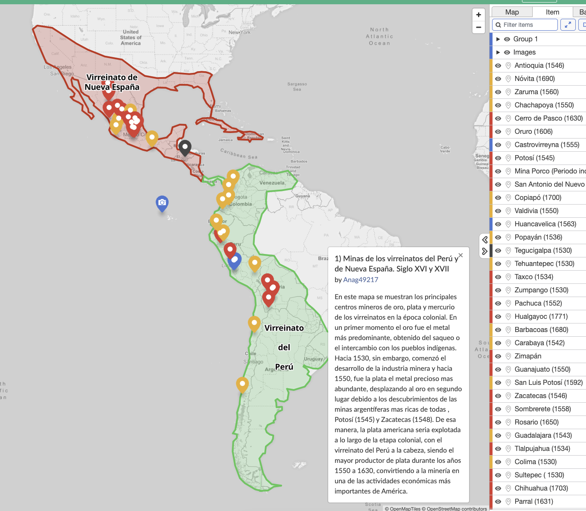
Mapa interactivo con las principales minas de la Monarquía Hispánica https://maphub.net/Anag49217/map-3
Todos estos abusos sobre la población nativa generaron importantes debates en el seno de la Monarquía Hispánica en los círculos intelectuales, eclesiásticos y universitarios (el debate sobre los “justos títulos” de conquista). Destacaron los escritos de fray Bartolomé de las Casas, primer obispo de Chiapas (México), que denunciaban la explotación y crueldad a la que se sometía a los indígenas, culminando en debates históricos como la Controversia de Valladolid (1550) frente a quienes justificaban el sometimiento. Finalmente, estos debates jurídicos (impulsados por pensadores de la Escuela de Salamanca como Francisco de Vitoria) sentaron un antecedente histórico para el derecho internacional moderno y los Derechos Humanos.
A nivel comercial, si bien la plata fue el verdadero motor económico, Castilla suministraba trigo, ganado (ovejas), textiles y armamento. De América destaca la llegada de nuevos alimentos y productos: tomate, maíz, patata, cacao, tabaco, etc. Todo este intercambio se desarrolló bajo un estricto monopolio comercial centralizado en el puerto de Sevilla a través de la Casa de Contratación, que organizó el sistema de Flotas de Indias (convoyes de barcos mercantes escoltados por buques de guerra) para proteger el transporte frente a los ataques de piratas y corsarios[10].
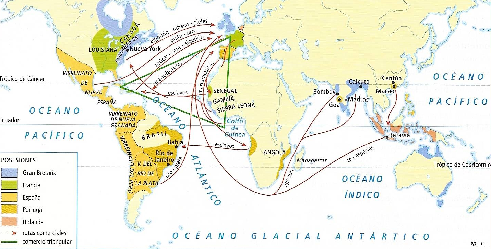
1.3 Los Austrias Mayores: Carlos I y Felipe II
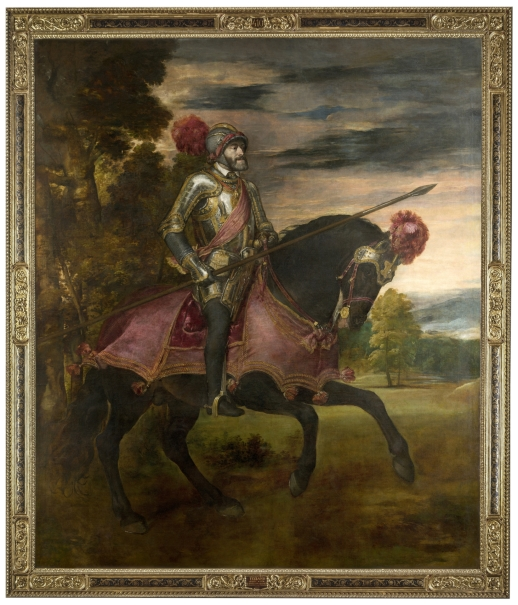
1.3.1 Carlos I de España y V de Alemania (1516-1556)
Al reinado de los Reyes Católicos le sucedió el de su nieto Carlos I en 1516, iniciando un cambio de dinastía, la de los Austrias (también llamada Habsburgo) en la península. Recibió una inmensa herencia territorial gracias a un complejo sistema de alianzas matrimoniales que se forjaban desde los Reyes Católicos: por parte materna heredó Castilla (junto a toda América) y la Corona de Aragón (con sus territorios mediterráneos con Cerdeña, Sicilia, Nápoles); por parte paterna, los territorios europeos de Borgoña, Países Bajos, Flandes, el Franco Condado, Austria y los derechos al título de emperador del Sacro Imperio Romano Germánico, que consiguió en 1519. 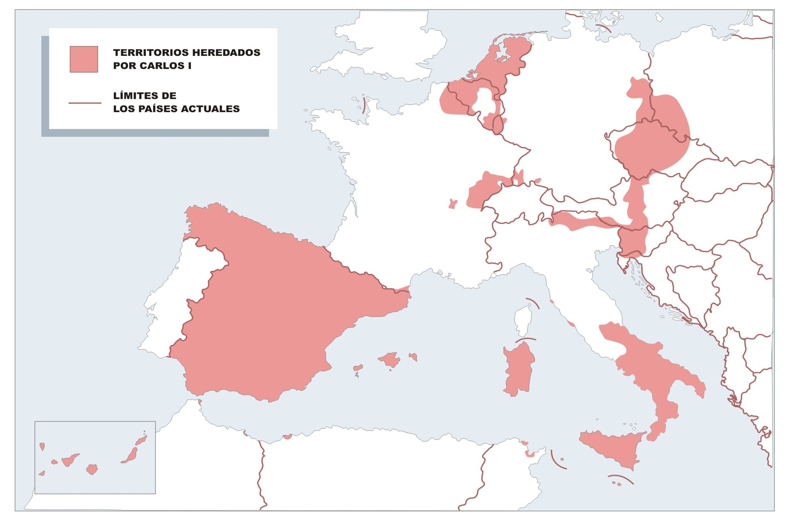
Sus inicios en España fueron difíciles. Su llegada (apenas hablaba castellano) rodeado de consejeros extranjeros (Carlos tenía una visión más europea que hispánica) y su agresiva política de recaudar impuestos para coronarse emperador provocaron graves revueltas internas en 1520: la guerra de las Comunidades de Castilla (o levantamiento de los comuneros, protagonizada por las oligarquías urbanas) y la rebelión de las Germanías (en territorios de la Corona de Aragón, con carácter más social, artesanos contra nobles). Ambas fueron sofocadas, consolidando la monarquía autoritaria.
En política exterior, Carlos I defendió la Universitas Christiana (la unidad de los cristianos católicos, bajo el mando del emperador y el Papa). Para ello tuvo que enfrentarse a tres grandes enemigos: Francia (luchando contra Francisco I por la hegemonía europea, especialmente en la península itálica), el Imperio otomano (que amenazaba el Mediterráneo y Viena) y el nacimiento del protestantismo (nuevo movimiento cristiano que rompía con la Iglesia católica). Pese a sus esfuerzos y victorias militares, no pudo evitar la división religiosa de Europa (católicos-protestantes), viéndose obligado a firmar la Paz de Augsburgo (1555), que reconocía la libertad religiosa de los príncipes alemanes (permitiendo, en la práctica, libertad para no ser católico). Agotado, abdicó un año después (1556) y se retiró al Monasterio de Yuste (Cáceres), donde falleció en 1558.
1.3.2 Felipe II (1556-1598)
Felipe II heredó todos los territorios de su padre, a excepción del Sacro Imperio y Austria. A diferencia de Carlos I, Felipe II gobernó un imperio puramente hispánico, estableciendo la capital permanente en Madrid (1561) y centralizando la administración mediante el sistema polisinodial (Consejos) desde el Monasterio de El Escorial y una administración de la justicia basada en chancillerías[11]. Su política se basó en la defensa inflexible del catolicismo (Contrarreforma) y el mantenimiento de la hegemonía hispánica. 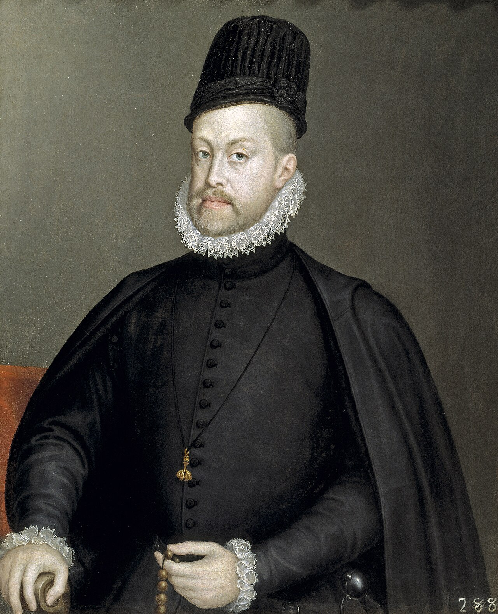 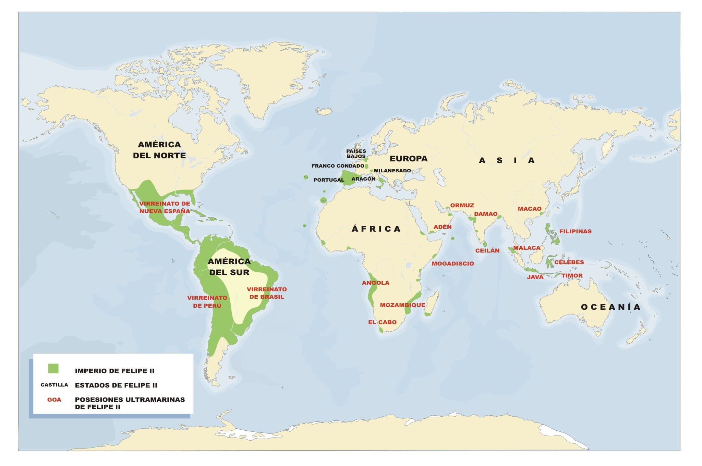
Monarquía hispánica bajo Felipe II. Obsérvese cómo Portugal está integrada, pero no los territorios del centro de Europa de Carlos I.
En el exterior, logró importantes éxitos: derrotó a Francia en la batalla de San Quintín (1557), frenó temporalmente a los otomanos en el Mediterráneo en la batalla de Lepanto (1571)[12] y en 1580 logró la unión dinástica con Portugal[13], sumando el enorme imperio colonial portugués (haciendo realidad que "en sus dominios no se ponía el sol") con la Unión Ibérica (toda la península: Castilla, Aragón, Portugal, Navarra, Granada, etc.), en la que cada territorio mantenía sus derechos e instituciones.
Sin embargo, Felipe II se enfrentó a graves problemas que acabaron quebrando la hacienda real (bancarrotas)[14]: la rebelión de Flandes (Países Bajos), que terminó dividiéndose entre un norte protestante (Holanda) y un sur católico; la rebelión de las Alpujarras que impuso una dura represión contra la minoría morisca (1568-1571) y el enfrentamiento contra la Inglaterra de Isabel I, que apoyaba a los rebeldes flamencos y a los piratas en América, culminando en el desastre de la Armada Invencible (1588).
1.4 Los Austrias Menores: Felipe III, Felipe IV y Carlos II
El siglo XVII en España estuvo marcado por una profunda crisis demográfica y económica, y por la pérdida de la hegemonía en Europa. A los monarcas de este siglo se les conoce como "Austrias Menores", cuya principal novedad política fue la delegación de las tareas de gobierno en la figura del valido (o privado), un ministro de máxima confianza del rey que actuaba como un auténtico primer ministro.
1.4.1 Felipe III (1598-1621)
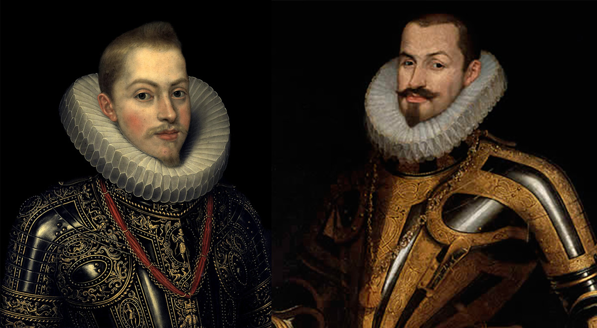
Dejó el poder en manos de su valido, el duque de Lerma. En política exterior, ante el agotamiento financiero, se optó por el pacifismo, destacando la firma de la Tregua de los Doce Años (1609) con los rebeldes holandeses (periodo conocido como la Pax Hispánica, 1598-1621). En política interior, la medida más trascendental fue la expulsión de los moriscos (1609). Esta decisión, justificada por motivos religiosos y de seguridad, supuso un desastre demográfico y económico, especialmente para la agricultura en Valencia y Aragón.
1.4.2 Felipe IV (1621-1665)
Su reinado, dirigido por el conde-duque de Olivares, supuso la vuelta a una política exterior agresiva. España intervino en la guerra de los Treinta Años (1618-1648) para defender la hegemonía de los Austria (Habsburgo) y el catolicismo contra los Estados protestantes (Dinamarca, Suecia, Estados alemanes, etc.). Para sostener este inmenso esfuerzo bélico, Olivares propuso la Unión de Armas, un proyecto para que todos los reinos peninsulares (y no solo Castilla) aportaran hombres y dinero[15]. Este intento de centralización provocó la gravísima crisis de 1640, estallando numerosas rebeliones, como en Cataluña (que se entregó a Francia temporalmente) y Portugal (que inició su guerra de independencia, lográndola definitivamente años después). En el exterior, las derrotas obligaron a firmar la Paz de Westfalia (1648), que reconoció la independencia de las Provincias Unidas (actual Holanda[16]), y la Paz de los Pirineos (1659), que consagró a Francia como la nueva gran potencia europea. 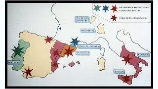
Las bancarrotas fueron, posiblemente, el mayor problema de su reinado, ya que fueron la consecuencia del inmenso gasto militar (numerosas guerras y frentes abiertos). El Estado suspendió pagos en cuatro ocasiones, obligando a la Corona a crear y subir los impuestos, vender cargos públicos y devaluar (rebajar) el valor de la moneda (moneda de vellón), lo que hundió la economía de Castilla y disparó las desigualdades y pobreza en la población.
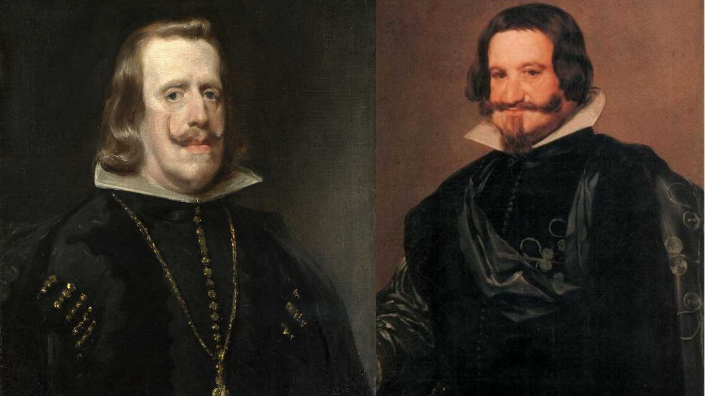
1.4.3 El Siglo de Oro: 150 años de esplendor para las artes hispánicas
Paradójicamente, el declive político, demográfico y económico del siglo XVII coincidió con la etapa de mayor esplendor cultural de la historia de España, conocida como el Siglo de Oro. Aunque se le denomine "siglo", abarcó casi doscientos años: desde 1492 (con hitos como la publicación de la primera obra de gramática castellana de Nebrija o la llegada a América) y concluye en 1681 con la muerte de Calderón de la Barca. Engloba dos grandes etapas: el Renacimiento (siglo XVI), enfocado en el equilibrio clásico, y el Barroco (siglo XVII), caracterizado por lo pasional, el dinamismo, el contraste y su uso como propaganda de la Iglesia frente al protestantismo (Contrarreforma).
Respecto a la literatura, las letras españolas alcanzaron la cumbre mundial, destacando el nacimiento de la novela moderna con Miguel de Cervantes (El ingenioso hidalgo don Quijote de la Mancha[17]) y la novela picaresca (El Lazarillo de Tormes). En poesía despuntan figuras místicas (Santa Teresa de Jesús) y la famosa rivalidad barroca entre Quevedo y Góngora. El teatro fue revolucionado por Lope de Vega y Calderón de la Barca (La vida es sueño).
En el campo de la pintura, en el siglo XVI destacó el estilo manierista de El Greco en Toledo y, durante el siglo XVII, la pintura barroca española dominó la época retratando tanto la majestad de la Corte como la dura realidad de la calle, gracias a genios como Murillo, Zurbarán y, de manera indiscutible, Velázquez (pintor oficial de cámara de Felipe IV y autor de Las Meninas).
“Dicen que las grandes estrellas arden con más fuerza justo antes de apagarse; el Siglo de Oro fue ese último y hermoso destello de la Monarquía Hispánica”
1.4.4 Carlos II (1665-1700)
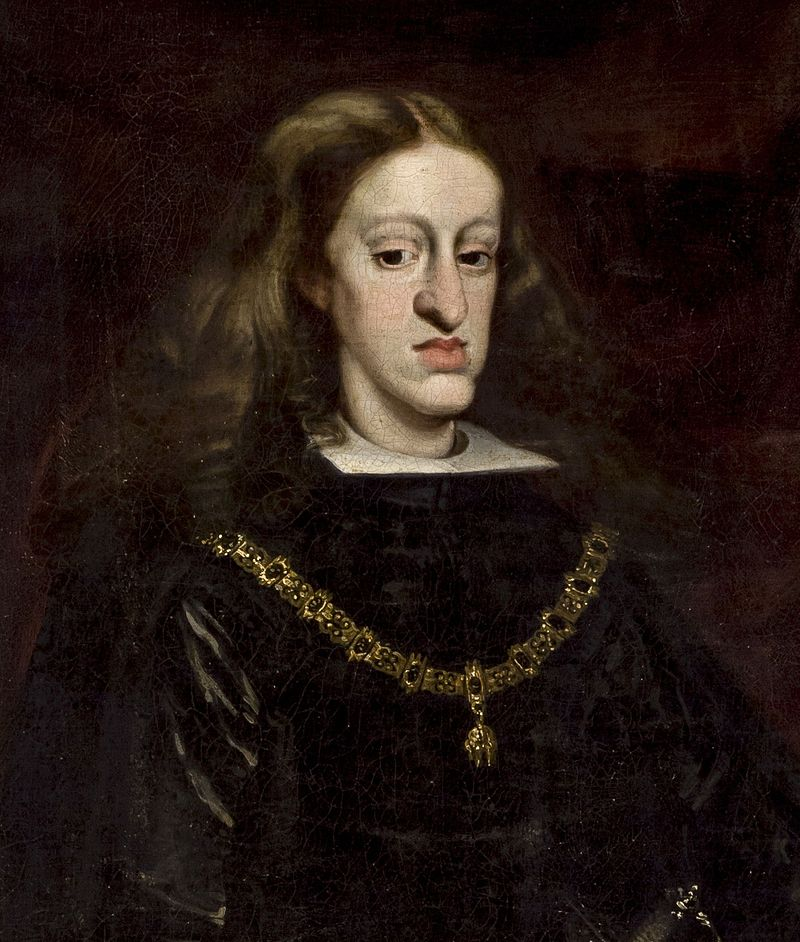
Conocido como "el Hechizado" por su débil salud[18], su reinado evidenció un declive político de la monarquía, gobernada por diversos validos (como Juan José de Austria), aunque se produjeron importantes reformas fiscales y monetarias que lograron, a finales del siglo XVIII, una recuperación y estabilidad económica. El mayor problema de su reinado fue el sucesorio: murió sin descendencia, en 1700. Carlos II fijó en su testamento, como heredero, a Felipe de Anjou (nieto de Luis XIV de Francia), lo que desencadenaría el estallido de la guerra de sucesión española (1701-1714). El otro pretendiente, que quería continuar la dinastía, el archiduque Carlos de Austria, reclamaría el trono de la Monarquía Hispánica ante la llegada de Felipe V (Felipe de Anjou, de la casa de Borbón).
10-12 líneas cada una. Total aproximado entre las dos, 20-24 líneas.
Ejemplos de preguntas cortas del bloque 3
La formación de la Monarquía Hispánica y su expansión mundial (1474-1700)
1. ¿Qué monarcas iniciaron a finales del siglo XV la unión dinástica de los reinos peninsulares? Explique brevemente en qué consistió dicha unión.
(Debe incluir: Isabel I de Castilla y Fernando II de Aragón; matrimonio en 1469; unión dinástica pero no institucional; cada corona mantiene sus propias leyes, moneda, Cortes e instituciones; creación de la Monarquía Hispánica).
2. ¿Qué rey de la Monarquía Hispánica fue también emperador del Sacro Imperio Romano Germánico? Explique brevemente los conflictos políticos internos que se produjeron en su reinado.
(Debe incluir: Carlos I de España y V de Alemania; revuelta de las Comunidades de Castilla -comuneros, oligarquías urbanas-; revuelta de las Germanías en Valencia y Mallorca -carácter social, artesanos contra nobleza-; ambas en 1520).
3. ¿Qué valido del rey Felipe IV propuso el proyecto de la Unión de Armas? Explique brevemente los principales hitos políticos y problemas económicos.
(Debe incluir: el conde-duque de Olivares; vuelta a una política exterior agresiva -guerra de los Treinta Años-; grave crisis política de 1640 provocada por la centralización de la Unión de Armas -rebeliones de Cataluña y Portugal-; hundimiento económico causado por el inmenso gasto militar, suspensiones de pagos -bancarrotas-, subida de impuestos y devaluación con la moneda de vellón).
4. ¿En qué reinado tuvo lugar la derrota de la “Armada Invencible”? Explique brevemente las líneas maestras de la política exterior de este monarca.
(Debe incluir: reinado de Felipe II; defensa a ultranza del catolicismo frente al protestantismo -Contrarreforma-; mantenimiento de la hegemonía hispánica; enfrentamientos con Francia -San Quintín-, Imperio otomano -Lepanto-, Inglaterra e independentistas de Flandes; logró la Unión Ibérica en 1580).
5. ¿Qué nombre reciben los monarcas del siglo XVII que delegaron las tareas de gobierno en validos? Explique brevemente en qué consistía la figura del valido.
(Debe incluir: Austrias Menores -Felipe III, Felipe IV y Carlos II-; el valido o privado era un ministro de máxima confianza del rey, perteneciente a la alta nobleza, que actuaba como primer ministro y tomaba las principales decisiones políticas; ejemplos: duque de Lerma, conde-duque de Olivares).
6. ¿Durante qué reinado se produjo la expulsión de los moriscos? Explique brevemente las consecuencias demográficas y económicas de esta medida.
(Debe incluir: reinado de Felipe III, año 1609; grave pérdida demográfica de unas 300 000 personas; duras consecuencias económicas especialmente para la agricultura de regadío en la Corona de Aragón -Valencia y Aragón- al perder gran parte de su mano de obra campesina).
7. ¿Qué valido del rey Felipe IV dirigió la política española durante la guerra de los Treinta Años? Explique brevemente en qué consistió su proyecto de la Unión de Armas.
(Debe incluir: el Conde-Duque de Olivares; propuesta de 1626 para que todos los reinos de la Monarquía Hispánica, y no solo Castilla, aportaran hombres y dinero para la guerra en proporción a su riqueza y población; chocaba con los fueros de los distintos reinos y provocó la Crisis de 1640).
8. ¿Qué dos grandes rebeliones estallaron en 1640 contra la política centralizadora del conde-duque de Olivares? Explique brevemente el desenlace de ambas.
(Debe incluir: la rebelión de Cataluña y la de Portugal; Cataluña acabó rindiéndose y reincorporándose a la Monarquía Hispánica conservando sus fueros; Portugal inició una larga guerra que culminaría con su independencia definitiva coronando a la casa de Braganza).
9. ¿Qué monarca fue el último representante de la dinastía de los Austrias en España? Explique brevemente el problema sucesorio que se generó a su muerte.
(Debe incluir: Carlos II “el Hechizado”; muerte sin descendencia en 1700; testamento a favor de Felipe de Anjou -Borbón- frente a las reclamaciones del archiduque Carlos de Austria -Habsburgo-; provocó el estallido de la guerra de sucesión, con dimensión civil e internacional).
10. ¿Qué dos monarcas de la Casa de Austria reinaron tras los Reyes Católicos durante casi todo el siglo XVI? Explique brevemente las características de la hegemonía española en el mundo. (PAU 2017)
(Debe incluir: Carlos I de España y su hijo Felipe II -Austrias Mayores-; creación del mayor imperio territorial de la época abarcando dominios en Europa, América, África y Asia; asunción de la defensa de la fe católica frente a los protestantes y el Imperio otomano; inmenso desgaste militar y financiero provocado por las continuas guerras de religión y hegemonía que derivó en sucesivas bancarrotas).
11. ¿Durante qué reinado se produjo el final de la Reconquista? Explique brevemente la política exterior de dicho reinado. (PAU 2018 y 2019)
(Debe incluir: reinado de los Reyes Católicos; expansión atlántica -América y Canarias- y mediterránea -Nápoles-; sistema de alianzas matrimoniales con Inglaterra, el papado y el Sacro Imperio Romano Germánico diseñado para aislar a Francia, su principal rival; establecimiento de embajadores permanentes en las cortes europeas, sentando las bases del Estado moderno).
12. ¿En qué reinado tuvo lugar la batalla de Lepanto? Explique brevemente la política exterior de la Monarquía Hispánica en ese reinado. (PAU 2018)
(Debe incluir: reinado de Felipe II; política basada en el mantenimiento de la hegemonía hispánica y la defensa a ultranza del catolicismo -Contrarreforma-; freno a los turcos en el Mediterráneo -Lepanto en 1571-; enfrentamientos contra Inglaterra -Armada Invencible- y contra Francia -San Quintín-; rebelión protestante e independentista de los Países Bajos; logró la incorporación del reino de Portugal -Unión Ibérica en 1580-).
13. ¿Qué monarca del siglo XVI tiene que afrontar las sublevaciones de las “Comunidades” y las “Germanías”? Explique brevemente los conflictos políticos más relevantes de la etapa de los Austrias Mayores en la península ibérica. (PAU 2019)
(Debe incluir: Carlos I; durante su reinado estallan las Comunidades en Castilla -revuelta de carácter político de las oligarquías urbanas contra el entorno extranjero del rey- y las Germanías en la Corona de Aragón -revuelta de carácter social de los artesanos contra la nobleza-; durante el reinado de Felipe II destacan la rebelión de los moriscos de las Alpujarras y las alteraciones de Aragón en defensa de sus fueros tras el caso de Antonio Pérez).
14. ¿Qué comunidades religiosas fueron expulsadas de Castilla y Aragón entre 1492 y 1502, respectivamente? Explique brevemente la política de unidad religiosa de los Reyes Católicos. (PAU 2019)
(Debe incluir: expulsión de los judíos en 1492 y conversión forzosa de los musulmanes en 1502 -dando origen a los moriscos-; objetivo de utilizar la religión católica como instrumento para unificar política y socialmente los reinos de la monarquía; creación del Tribunal de la Santa Inquisición en 1478 para vigilar la ortodoxia y perseguir a los falsos conversos; generó graves pérdidas demográficas, económicas y culturales).
Notas y referencias
[1] Según la RAE, debe escribirse en mayúscula, “Monarquía Hispánica” https://x.com/RAEinforma/status/1276094340373319688
[2] El matrimonio entre Isabel y Fernando se entiende mejor porque, aunque eran reinos distintos, ambas coronas habían quedado bajo el control de una misma dinastía: los Trastámara (en Castilla se instalaron tras una guerra civil en 1369 y en Aragón llegaron mediante el Compromiso de Caspe en 1412).
[3] La Fiesta Nacional de España, también denominada Día de la Hispanidad, comenzó en 1892. Esta festividad tuvo otros nombres con mayor carga nacionalista o incluso xenófoba, como el “Día de la Raza” (por la supuesta existencia de una raza hispana) entre 1918 y 1958.
[4] Aunque pareciera que el mito fuera contrario, sí se conocía que la Tierra era esférica (actualmente se habla de ovoide achatado por los polos). Ya en la Antigua Grecia, el matemático Eratóstenes, en el siglo III a. C., demostró con un experimento que empleaba sombras de obeliscos que la Tierra no podía ser plana y debía tener forma esférica. Colón, por tanto, se adentra en la expedición sabiendo que llegaría a tocar porción de tierra, aunque erróneamente pensó que sería la India.
[5] Cristóbal Colón falleció en 1506, convencido de haber llegado a la India (Asia), por lo que jamás supo que había tropezado con un nuevo continente. Esto fue confirmado un año después por el cartógrafo alemán Martin Waldseemüller, quien en su mapa de 1507 bautizó las nuevas tierras como “América”. Como breve apunte biográfico, este comerciante de origen genovés realizó cuatro viajes a las Indias y llegó a acumular tanto poder (y tantas quejas por su tiranía y abusos) que los propios Reyes Católicos ordenaron su detención, obligándolo a regresar a España encadenado. Pasó sus últimos años de vida enfermo y apartado del poder, intentando recuperar desesperadamente los títulos de gobernante que la Corona de Castilla le había arrebatado.
[6] La Corona española entregaba (encomendaba) un grupo de indígenas a un español, conocido como el encomendero. Los indígenas debían pagar tributos al encomendero (en metales, alimentos, tejidos o productos de la tierra) o prestarle servicios de trabajo personal a cambio de una obligación teórica de proteger a los indígenas y evangelizarlos en la fe católica. Sin embargo, en la práctica fue un sistema que permitió fuertes abusos, explotación, trabajos forzados y una drástica mortalidad en la población indígena.
[7] En la actualidad se conservan cabildos en cada isla de Canarias como órgano de gobierno autónomo insular.
[8] Salvando las distancias, el quinto real es parecido al IVA del presente (21 % en todos los productos), aunque era más bien un impuesto de aduana o arancel que solo afectaba a los productos procedentes de América.
[9] El término mita proviene del quechua y significa “turno”. Era una sistema de trabajo precolombino de origen incaico que la Monarquía Hispánica adaptó para sus propios intereses. Consistía en el reclutamiento forzoso y rotativo de varones adultos indígenas para trabajar, principalmente, en la minería de la plata (como en el famoso cerro Rico, de Potosí) y en obras públicas. A diferencia de la etapa incaica (basada en la reciprocidad y el cuidado comunal), la mita colonial fue un sistema de explotación extrema: aunque legalmente recibían un pequeño salario, las condiciones eran tan duras y el salario era tan ínfimo que en la práctica funcionó como un régimen de semiesclavitud.
[10] Es en esta época cuando se impulsan los seguros: las misiones comerciales con América eran muy peligrosas (piratería, daños en el propio viaje, tempestades) y se crearon empresas a las que, a cambio de una cantidad de dinero, cubrían las posibles pérdidas de mercancía. Salvando las distancias, es exactamente el mismo modelo de los seguros (coche, moto, hogar, salud) en la actualidad: pagas por adelantado para cubrir un posible riesgo.
[11] Actualmente existe una: el Palacio de la Real Chancillería de Granada, google.com/maps/place//data=!4m2!3m1!1s0xd71fde9deb0642f:0xdd958c5c7ca8e1fb?sa=X&ved=1t:8290&ictx=111 , aunque solo se conserva el edificio en sí y actualmente alberga la sede del Tribunal Superior de Justicia de Andalucía (TSJA), el órgano judicial más importante de nuestra comunidad autónoma.
[12] De aquí viene la famosa batalla de Lepanto, en la que Miguel de Cervantes luchó y realmente no perdió la mano, sino la movilidad de su brazo izquierdo. Cervantes siempre estuvo inmensamente orgulloso de sus cicatrices por haber participado en lo que él definió como “la más alta ocasión que vieron los siglos”, lo que acabó extendiendo el sobrenombre popular de “el manco de Lepanto”. Más allá de la faceta literaria, Cervantes fue un personaje fascinante porque trabajó como recaudador de impuestos en Vélez-Málaga y… defraudó, por lo que fue acusado de corrupción y entró en la cárcel.
[13] Portugal tuvo un problema sucesorio en 1578: su rey, Enrique I, murió sin descendencia, por lo que se disputó el trono entre Antonio (nieto de Manuel I de Portugal) y Felipe II de Castilla (también nieto de Manuel I de Portugal). Gracias al exitoso mando militar del duque de Alba, Felipe II derrotó la facción antonina, convirtiéndose en rey de Portugal simultáneamente con el título de Castilla, Aragón, etc. Esta unión duró hasta 1640, cuando Portugal coronó otra dinastía, la casa de Braganza bajo Juan IV, y se independizó de la Monarquía Hispánica.
[14] Sobre cómo las deudas de los Estados llegan a la actualidad: https://arqueogestion.com/2016/05/31/el-inicio-del-declive-del-imperio-espanol-las-bancarrotas-de-la-monarquia-hispanica-en-los-siglos-xvi-y-xvii/. La Monarquía Hispánica, aunque contara con unos 150 años de indiscutible hegemonía mundial, se declaró siete veces en bancarrota entre el siglo XVI y XVIII. Las principales dificultades financieras vinieron a partir de Felipe II y fueron endémicas en la Monarquía Hispánica.
[15] La Unión de Armas fue una propuesta política proclamada por el conde-duque de Olivares, valido del rey Felipe IV, por la que todos los "reinos, estados y señoríos" de la Monarquía Hispánica contribuirían en hombres y dinero en proporción a población y riqueza: la Corona de Castilla y las Indias aportarían 44 000 soldados; el Principado de Cataluña, el Reino de Portugal y el Reino de Nápoles, 16 000 cada uno; los Países Bajos del sur, 12 000; el Reino de Aragón, 10 000; el Ducado de Milán, 8 000; y los reinos de Valencia, Mallorca y Sicilia, 6 000 cada uno, hasta totalizar un ejército de 140 000 hombres. Sin embargo, este proyecto fue visto como una medida centralizadora, autoritaria y fue rechazada porque chocaba frontalmente con los fueros (leyes y privilegios propios) de los reinos no castellanos (Cataluña, Portugal, etc.). Esta negativa fue la chispa que hizo estallar la gravísima crisis de 1640.
[16] Países Bajos y España mantienen profundos vínculos históricos, ya que la Monarquía Hispánica controló este territorio durante más de un siglo. Esto dejó huellas lingüísticas en el idioma neerlandés, que adoptó términos militares de los tercios españoles como "kameraad" (camarada) o "parade" (parada militar). También dejó una curiosa herencia cultural: según la tradición holandesa, Sinterklaas (San Nicolás, el origen de Papá Noel) no vive en el Polo Norte ni en Laponia, sino que viaja cada mes de noviembre en barco de vapor desde España. Si bien esta tecnología no existía en época de Felipe IV (anacronismo), la leyenda fue modernizándose con el tiempo, adoptando este transporte en el siglo XIX que iba repleto de mandarinas y naranjas (de Valencia; el color naranja es el icono nacional, por la Casa de Orange, de Países Bajos) y regalos (más o menos como nuestra cabalgata de los Reyes Magos) desde España para repartirlos a los niños holandeses, dependiendo de si se portaron bien o mal.
[17] La obra cénit de Cervantes, el Quijote, publicada en 1605, fue un éxito rotundo en una época sin leyes de derechos de autor. Esto provocó que en 1614 se publicara una falsa segunda parte (el famoso Quijote de Avellaneda). Ante este plagio, Cervantes reaccionó publicando su auténtica segunda parte en 1615, demostrando una genialidad sin precedentes en la literatura mundial. Esta logró ser la primera novela de la historia con evolución psicológica de los personajes (la “quijotización” de Sancho y la “sanchificación” de don Quijote) y pionera en el uso de la metaficción: los propios protagonistas saben que existe un libro falso sobre ellos, cambian su ruta para ir contra el autor impostor y se cruzan con personajes de la copia para demostrar que los verdaderos son ellos (así, don Quijote y Cervantes “derrotaron” a Avellaneda). Cervantes falleció un año después, en 1616, sin ser consciente de que su respuesta había inventado la novela moderna y sería uno de los hitos de la literatura mundial y la obra más importante en español.
[18] Se debate sobre las posibles condiciones genéticas que pudo tener, ya que fue fruto de un matrimonio entre Felipe IV y su sobrina María de Austria. Desde el punto de vista de los análisis clínicos e históricos, se teoriza que pudo padecer el síndrome de Klinefelter (nació con un cromosoma X adicional, 47, XXY; en lugar de 46,XY), afectando a su desarrollo cognitivo (dificultades en el aprendizaje, probable dislexia, etc.) y una severa malformación mandibular (la característica mandíbula prominente de los Habsburgo). Esto le impidió tener descendencia, aunque su Corte intentó emparejarlo en numerosas ocasiones, sin poder tener ningún hijo que pudiera continuar el trono hispánico.